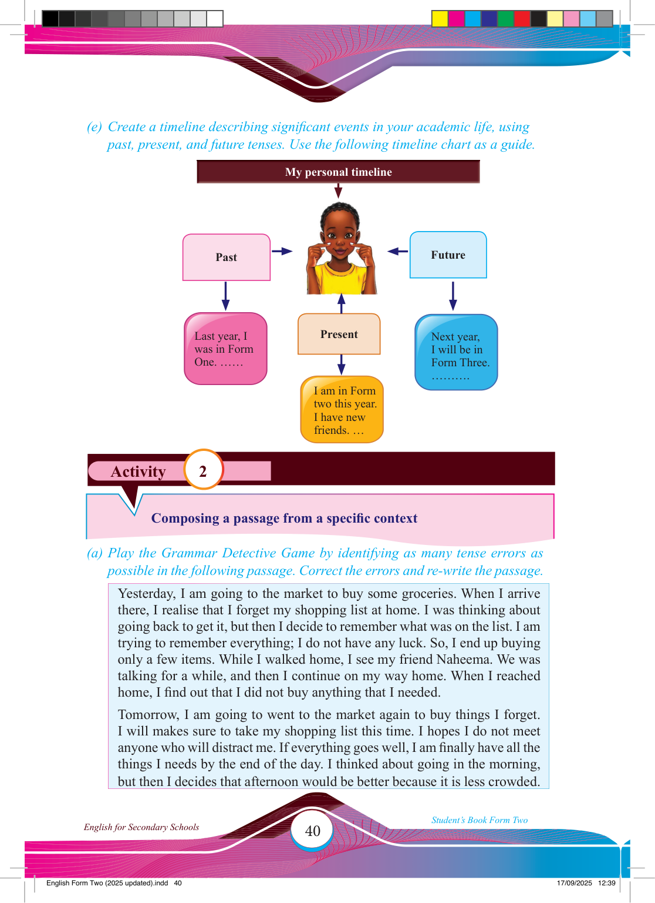

Activity 2
(e) Create a timeline describing signifi cant events in your academic life, using past, present, and future tenses. Use the following timeline chart as a guide.
Past
Present
Future
Last year, I was in Form
One. ……
I am in Form two this year.
I have new friends. …
Next year,
I will be in
Form Three.
……….
Composing a passage from a specifi c context
(a) Play the Grammar Detective Game by identifying as many tense errors as possible in the following passage. Correct the errors and re-write the passage.
Yesterday, I am going to the market to buy some groceries. When I arrive there, I realise that I forget my shopping list at home. I was thinking about going back to get it, but then I decide to remember what was on the list. I am trying to remember everything; I do not have any luck. So, I end up buying only a few items. While I walked home, I see my friend Naheema. We was talking for a while, and then I continue on my way home. When I reached home, I fi nd out that I did not buy anything that I needed.
Tomorrow, I am going to went to the market again to buy things I forget.
I will makes sure to take my shopping list this time. I hopes I do not meet
anyone who will distract me. If everything goes well, I am fi nally have all the
things I needs by the end of the day. I thinked about going in the morning, but then I decides that afternoon would be better because it is less crowded.
17/09/2025 12:39
My personal timeline